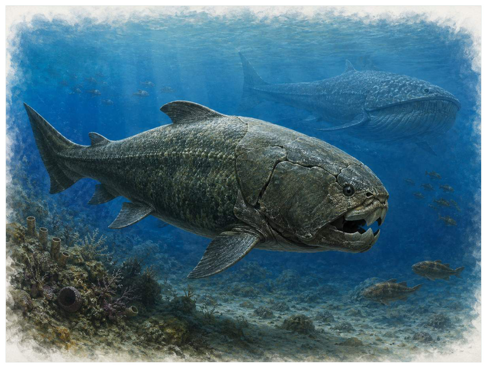
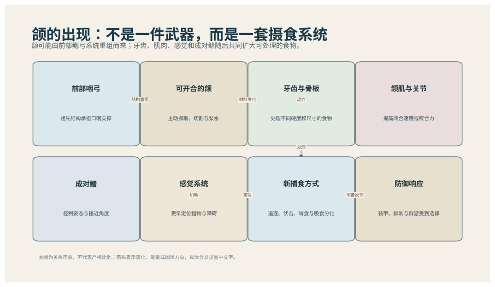

第07篇 · 泥盆纪：鱼类时代与四足动物起源 · 第 20 章
邓氏鱼：从‘十米海怪’回到证据
本篇主题:泥盆纪：鱼类时代与四足动物起源
颌、鳍、森林和浅水环境共同推动脊椎动物的新实验。

本章科学复原配图 （用于呈现结构与生态关系, 不替代化石照片、测量数据与系统发育证据。）
晚泥盆世，约3.82亿至3.58亿年前对应的世界与现代地图和气候都不同。理解它不能从一只明星物种开始，而应从整个系统的限制开始。邓氏鱼拥有厚重头胸甲、锋利骨板和强大的颌杠杆，是晚泥盆世大型捕食者。但其身体后半部多由软骨组成，保存稀少，传统复原常把头部比例套用到完整盾皮鱼，得到六至十米甚至更大的形象。近年的比例研究提出更短、更深的身体，常见估计约三到四米上下，仍是强壮的大型鱼，却未必是纪录片中的细长巨兽。
进入这个时代
生态系统的真实声音不是巨兽咆哮，而是持续的摄食、分解、搬运和繁殖。每一具尸体、每一层落叶和每一次沉积扰动都会重新分配资源。一张巨大的装甲头部从水中接近，口缘没有现代鲨鱼式独立牙齿，而是不断磨锐的骨质刃板。它张口速度和咬合力可能足以切割大型猎物，但猎物范围、巡游速度和是否经常咬碎重甲仍需区分模型与直接证据。
在“邓氏鱼：从‘十米海怪’回到证据”所覆盖的时间里，不能把地理与气候当作固定背景。海陆位置、海平面、河流或植被结构会改变资源可达性，同一性状在不同地区可能得到完全相反的选择结果。
以邓氏鱼：从‘十米海怪’回到证据为例，身体结构总有材料和发育成本。硬壳提高防护却使生长和运动更昂贵，长颈扩大取食范围却增加支撑与供血问题，高代谢提高持续活动也提高食物需求。所谓成功设计从来是特定环境中的权衡。 在本章中，这一约束具体落在“大型捕食者连接鱼类、头足类和同类之间的能量流”这条关系上。
再从晚泥盆世，约3.82亿至3.58亿年前的时间尺度看，化石记录偏爱硬组织、快速埋藏和容易出露的岩层。一次“首次出现”通常只是目前所知的最早记录，一次“突然消失”也需要排除保存窗口关闭。年代、形态和环境证据必须一起解释。它与“颌杠杆快速闭合”共同决定了后续变化可以沿哪些路径发生。

图 20-1 颌、牙齿和成对鳍共同扩大鱼类可利用生态位。
生态系统如何运转
把“大型捕食者连接鱼类、头足类和同类之间的能量流”放进食物网，可以看到它不是孤立行为。它会影响种群密度、栖息地使用和尸体进入分解链的速度，并把后果传给并未直接参与互动的物种。
围绕“大型捕食者连接鱼类、头足类和同类之间的能量流”，还要考虑空间异质性。一项在浅海、河谷或林冠有效的策略，移到深水、干旱内陆或开阔地便可能失去优势。因此同一支系常出现区域性扩张，而不是全球同步取代。 对邓氏鱼：从‘十米海怪’回到证据而言，这一后果还会与“骨板刃缘通过磨耗维持切割面”相互放大或抵消。
理解“骨板刃缘通过磨耗维持切割面”需要区分个体事件与长期压力。偶然一次捕食只改变个体命运，持续数千代的稳定关系才可能推动牙齿、外壳、感觉器官或生活史发生方向性变化。
围绕“骨板刃缘通过磨耗维持切割面”，这一机制也会留下间接证据：咬痕、修复伤、足迹密度、粪化石、牙齿磨损和群落年龄结构分别记录不同环节。只有多种证据方向一致，行为解释才应上调可信度。 对邓氏鱼：从‘十米海怪’回到证据而言，这一后果还会与“高咬合能力与身体机动性之间存在权衡”相互放大或抵消。
“高咬合能力与身体机动性之间存在权衡”还会改变可利用空间。一个支系若能进入新的水深、植被高度或沉积层，竞争会暂时减弱；随后追随者、捕食者和寄生者又会把新空间变成新的互动网络。
围绕“高咬合能力与身体机动性之间存在权衡”，从演化树看，相似关系可能在远亲中反复出现。功能相近不必意味着近缘，而同一祖先结构也可能被后代改作完全不同的用途；生态解释必须与系统发育互相校验。 对邓氏鱼：从‘十米海怪’回到证据而言，这一后果还会与“大型捕食者连接鱼类、头足类和同类之间的能量流”相互放大或抵消。
关键演化创新
在“邓氏鱼：从‘十米海怪’回到证据”中，围绕“颌杠杆快速闭合”，讨论“颌杠杆快速闭合”时，最重要的问题是它解除哪一道限制。只要原有身体在运动、摄食、呼吸或繁殖上受约束，能够稍微缓解约束的变异就可能积累，最终产生看似跃迁的结果。 它首先需要在晚泥盆世，约3.82亿至3.58亿年前的生态条件下产生可测量收益。
就“颌杠杆快速闭合”而言，化石能较可靠地记录硬组织形态，却很少直接保留基因调控与短时行为。因此结构出现通常可信，最初用途和选择路径则应按证据标为主流解释或合理推测。 本章把它与“自磨锐骨板”并列，是为了显示复杂性状往往依赖多部分协同。
在“邓氏鱼：从‘十米海怪’回到证据”中，围绕“自磨锐骨板”，从共同选择角度看，“自磨锐骨板”可能先服务旧功能，后来才参与今天最熟悉的用途。把最终功能倒推成起源原因，会把演化误写成有目的的工程。它首先需要在晚泥盆世，约3.82亿至3.58亿年前的生态条件下产生可测量收益。
就“自磨锐骨板”而言，其宏观影响往往滞后于结构起源。一个创新可以先在小型、稀少支系中存在数百万年，直到环境变化或竞争者灭绝后才迅速扩张；“出现”和“成为主导”是两个不同事件。 本章把它与“头胸甲与柔软躯干组合”并列，是为了显示复杂性状往往依赖多部分协同。
在“邓氏鱼：从‘十米海怪’回到证据”中，围绕“头胸甲与柔软躯干组合”，讨论“头胸甲与柔软躯干组合”时，最重要的问题是它解除哪一道限制。只要原有身体在运动、摄食、呼吸或繁殖上受约束，能够稍微缓解约束的变异就可能积累，最终产生看似跃迁的结果。 它首先需要在晚泥盆世，约3.82亿至3.58亿年前的生态条件下产生可测量收益。
就“头胸甲与柔软躯干组合”而言，这也提醒我们不要寻找单一关键基因。复杂性状由多个组织和调控网络协调，改变任何一环都可能产生不同结果，演化路径因此呈树状而非直线。 本章把它与“颌杠杆快速闭合”并列，是为了显示复杂性状往往依赖多部分协同。
生命群像：把物种放回生态网络
泰雷尔邓氏鱼（Dunkleosteus terrelli）
认识泰雷尔邓氏鱼（Dunkleosteus terrelli）要先放弃静态骨架印象。它生活在晚泥盆世，约现阶段常估约3至4米，范围仍有讨论，日常任务是作为大型海洋捕食者维持能量与繁殖。头胸甲、骨质颌刃和强壮颈关节形成高效咬合系统只是这一整套生活史中最容易化石化的部分。
对泰雷尔邓氏鱼而言，这种生活方式还会反向塑造环境。摄食改变植物或猎物结构，足迹和掘穴改变沉积，尸体和排泄物把营养集中到局部。生态位不是它进入的固定房间，而是它与其他生物共同建造并持续修改的关系网络。 这使“头胸甲、骨质颌刃和强壮颈关节形成高效咬合系统”不能脱离其大型海洋捕食者角色来理解。
我们之所以能够作出上述判断，主要因为后躯缺失使体长不确定，最新短体型模型与传统长体型复原仍在比较。单一结构通常有多种功能解释，所以还要查看磨损、病理、肌肉附着、沉积环境和近缘比较。计算模型能排除不可能姿势，却不能自动恢复没有保存的软组织。
由泰雷尔邓氏鱼这个案例看，面对仍有争议的细节，负责任的复原不是停止讲述，而是标注证据等级。形态、年代和亲缘可较确定，具体姿势、叫声、求偶和群猎则按材料降级；新标本会在这些边界内继续改写认识。 它在晚泥盆世留下的记录，因此同时是第20章所讨论的形态史和生态史的一部分。
安氏邓氏鱼（Dunkleosteus amblyodoratus）
安氏邓氏鱼（Dunkleosteus amblyodoratus）生活在晚泥盆世，已知体型约为小于或接近属内大型种。它在群落中的角色可概括为海洋捕食者。最值得观察的结构是不同头甲比例显示邓氏鱼属并非单一体型模板。这些结构不是为了后来时代而准备，而是在当时直接影响摄食、运动、防御或繁殖。
对安氏邓氏鱼而言，相似环境可能让远亲出现相近轮廓，但内部结构会保留祖先限制。比较它与现代类比时，应只借用可检验的功能，不把现代动物的行为、社会制度或代谢水平整套复制到古生物身上。 这使“不同头甲比例显示邓氏鱼属并非单一体型模板”不能脱离其海洋捕食者角色来理解。
其复原依赖材料较少，种级差异和生态推断有限。年代和保存形态通常属于较强证据，体重、速度、颜色和社会行为则需要额外假设。书中把这些层次拆开，是为了让读者知道哪些可视为事实，哪些仍应等待更多材料。
由安氏邓氏鱼这个案例看，它不是祖先链条上必须跨过的一格。演化树中同时存在许多近缘支系，只有少数留下后代；旁支化石同样关键，因为它们显示某组性状出现的顺序和可行范围。 它在晚泥盆世留下的记录，因此同时是第20章所讨论的形态史和生态史的一部分。
Titanichthys（Titanichthys termieri）
在这一章的生命群像里，Titanichthys（Titanichthys termieri）不能只当作图鉴名称。它出现于晚泥盆世，体型大约数米级，主要生活方式是可能为大型悬浮滤食者；细长颌和较弱咬合构成与邓氏鱼形成鲜明生态对比则说明身体怎样围绕这一生活方式进行组合。
对Titanichthys而言，它既可能是捕食者、植食者或工程者，也同时是其他生物的猎物、竞争者和分解资源。一次取食只是一瞬，长期生态影响来自成千上万个体反复搬运营养、改变植被或扰动沉积物。体型越大，这种工程效应通常越明显，但恢复速度也常越慢。这使“细长颌和较弱咬合构成与邓氏鱼形成鲜明生态对比”不能脱离其可能为大型悬浮滤食者角色来理解。
科学家并未直接看见它生活，依据是滤食解释来自力学与形态，鳃耙等软组织未直接保存。现代类比可以帮助提出可检验模型，却不能取代化石；越具体的短时行为，越需要痕迹、内容物或重复病理等直接线索。
由Titanichthys这个案例看，这个案例还提醒我们，亲缘和生态角色是两件事。近亲可以因资源分化而外形迥异，远亲也能因相似压力而趋同。把它放在演化树和食物网两个坐标中，才不会误写成线性进步。 它在晚泥盆世留下的记录，因此同时是第20章所讨论的形态史和生态史的一部分。
东生鱼（Eastmanosteus）
从外形看，东生鱼（Eastmanosteus）最容易被记住的是与邓氏鱼近缘，部分标本保存软组织和胚胎信息。它生活在中晚泥盆世，大小约米级或更小，承担中大型捕食或食腐者这一生态功能。把年代、体型和功能放在一起，才能避免把奇特形态当成无意义装饰。
对东生鱼而言，成年体型往往主导复原，但幼体可能使用完全不同的食物和栖息地。若成长阶段跨越多个生态位，种群就同时依赖多套环境；其中任一环节中断都可能导致长期衰退。化石骨床的年龄结构因此比单具最大标本更能说明生态。这使“与邓氏鱼近缘，部分标本保存软组织和胚胎信息”不能脱离其中大型捕食或食腐者角色来理解。
证据核心是不同种体型与生态差异大，不能笼统合并。化石记录更擅长回答“结构是什么”，较难回答“每天怎样行动”。足迹、胃内容物、咬痕或胚胎若存在，会显著缩小推测范围；若只有零散骨骼，行为叙述就必须更克制。
由东生鱼这个案例看，它所代表的身体方案后来可能消失，也可能被远亲以不同材料重新发明。生命史因此既有可重复的功能解，也有不可复制的谱系路径。两者结合，才解释现代生物为何既熟悉又偶然。 它在中晚泥盆世留下的记录，因此同时是第20章所讨论的形态史和生态史的一部分。
胸甲鱼（Coccosteus）
胸甲鱼（Coccosteus）是中泥盆世的一名真实生态成员，而不是通往后代的抽象过渡。它约有约40厘米，以浅海或淡水小型捕食者的方式获取资源；关节化颈部使头部可相对胸甲抬起，扩大张口反映了其祖先历史与局部选择压力共同留下的结果。
对胸甲鱼而言，这种生活方式还会反向塑造环境。摄食改变植物或猎物结构，足迹和掘穴改变沉积，尸体和排泄物把营养集中到局部。生态位不是它进入的固定房间，而是它与其他生物共同建造并持续修改的关系网络。 这使“关节化颈部使头部可相对胸甲抬起，扩大张口”不能脱离其浅海或淡水小型捕食者角色来理解。
判断它的生活方式时，研究者首先使用常用作盾皮鱼身体比例参照，但直接外推到巨型邓氏鱼可能产生偏差。随后会检验替代解释：同样的牙是否也能处理其他食物，同样的骨骼比例是否由年龄造成，同一骨层是否来自群体生活还是灾难性聚集。排除过程比贴标签更重要。
由胸甲鱼这个案例看，过去的复原常受完整现代动物模板影响，新材料则迫使研究者接受更陌生的身体比例或生活方式。最稳妥的表达是保留估计区间，并明确哪些软组织、颜色和社会行为仍属合理推测。 它在中泥盆世留下的记录，因此同时是第20章所讨论的形态史和生态史的一部分。
因果链：环境、生态与性状
种群层面的成功还要考虑波动，而不仅是平均状态。在资源丰富年份，“自磨锐骨板”带来的高性能可能迅速增加个体数；在低谷年份，维持该结构的成本又会放大死亡。若安氏邓氏鱼拥有较广食谱或可迁移，便可能跨过低谷；若其不同头甲比例显示邓氏鱼属并非单一体型模板高度依赖单一环境，恢复就更困难。化石群落中的丰度峰值、体型变化和地理收缩能为这种“繁荣—压力—恢复”循环提供线索，但必须与采样偏差区分。对晚泥盆世，约3.82亿至3.58亿年前的任何稳态描述，都只是长期波动中被岩层保存的一小段。
本章的因果链最终落在繁殖上。“骨板刃缘通过磨耗维持切割面”改变个体获得资源和避开风险的方式，“颌杠杆快速闭合”改变身体能做什么，但只有这些差异持续影响配子、胚胎、幼体和成体留下后代的概率，演化频率才会跨世代变化。泰雷尔邓氏鱼和安氏邓氏鱼的化石常让人关注尺寸或武器，然而巢、蛋、芽孢、孢粉、幼体壳和成长线往往更接近选择真正发生的位置。理解邓氏鱼：从‘十米海怪’回到证据，因此要把最壮观的成年结构重新接回完整生活史。
把“颌杠杆快速闭合”拆成成本与收益，可以避免把演化创新写成无条件升级。它可能扩大摄食、运动或繁殖的边界，却要付出组织材料、发育协调和日常维持的代价；“自磨锐骨板”又会改变这笔账在不同生命阶段的分配。对泰雷尔邓氏鱼而言，头胸甲、骨质颌刃和强壮颈关节形成高效咬合系统在成年阶段或许十分醒目，但种群能否延续仍取决于幼体是否能找到食物、是否有安全的生长场所以及环境波动后是否保留繁殖者。化石往往偏爱成年硬组织，因此书写晚泥盆世，约3.82亿至3.58亿年前时必须主动补上这些不易保存却决定长期命运的环节。
从时间顺序看，“颌杠杆快速闭合”的最早记录不等于它立即改写生态系统。结构可能先以小幅变异出现在稀少支系中，经历很长的试验期，直到“大型捕食者连接鱼类、头足类和同类之间的能量流”所代表的资源条件或竞争格局改变，才出现可见的辐射。反过来，一个支系在化石记录中突然繁盛，也不证明关键结构刚刚产生；保存窗口打开、地理扩散或生态位释放都能造成类似图景。因此讨论晚泥盆世，约3.82亿至3.58亿年前的创新时，本章把“首次出现”“功能完善”“多样化”和“成为生态主导”分成四个问题，避免用一个日期替代整段历史。
在晚泥盆世，约3.82亿至3.58亿年前，身体不是若干部件的简单相加。“颌杠杆快速闭合”只有与“头胸甲与柔软躯干组合”在供能、控制和发育上兼容，才可能稳定遗传；局部性能提高若超过呼吸、循环或支撑能力，整体反而失效。Titanichthys的细长颌和较弱咬合构成与邓氏鱼形成鲜明生态对比因此应放进完整身体比例中解释，而不是把某一器官单独夸大。生物力学模型可以估算受力和运动范围，组织学能限制生长速度，近缘比较能提示同源关系；三者相互校验，才有可能从静态化石走向一个能够活着完成日常活动的动物或植物。
时代横截面：个体、种群与证据
证据强度也应逐句区分。颌关节和肌肉重建用于有限元与杠杆模型若直接记录形态或行为痕迹，可把某些可能性排除；头部尺度与多类鱼体比例关系用于估算体长若来自模型或现代类比，则通常提供范围而非唯一答案。对Titanichthys的细长颌和较弱咬合构成与邓氏鱼形成鲜明生态对比，我们也许能高可信地描述结构，却只能以主流解释讨论功能，以合理推测讨论日常行为。把层级写出来不会削弱故事，反而让读者知道未来新发现最可能改动哪一部分。
把结构看作模块，可以解释为什么过渡类型常显得“新旧并存”。泰雷尔邓氏鱼的头胸甲、骨质颌刃和强壮颈关节形成高效咬合系统可能已经接近后来状态，而呼吸、繁殖或运动的其他部分仍保留祖征；安氏邓氏鱼可能采用另一种组合达到相似功能。演化不要求所有部件同步改变，只要求每个阶段的完整个体能够生活和繁殖。正因如此，真实谱系会产生旁支、回退和多次独立试验，而不是教科书式直梯。
再把Titanichthys加入横截面，群落关系会从两者比较变成网络。它作为可能为大型悬浮滤食者，通过细长颌和较弱咬合构成与邓氏鱼形成鲜明生态对比连接资源与其他消费者；其数量变化可能同时影响泰雷尔邓氏鱼和安氏邓氏鱼，甚至改变分解链和营养循环。这样的间接效应很少能由一具骨架直接证明，却可以从物种共现、丰度、痕迹化石和环境指标中受到约束。邓氏鱼：从‘十米海怪’回到证据的生态复原因此需要群落数据，而不只是著名标本的精细解剖。
地理同样会拆散看似整齐的时代标签。晚泥盆世，约3.82亿至3.58亿年前并不是全球同时拥有同一种气候与群落：海盆深浅、纬度、山脉、河流和大陆隔离会让泰雷尔邓氏鱼、安氏邓氏鱼与Titanichthys的分布错开。一个支系可能在某地区衰退、在另一地区成为避难所；后来扩散又会造成化石记录中的“重新出现”。因此本章的代表物种用于说明机制，而不意味着它们都在同一地点同一时刻相遇。
“谁取代了谁”常把复杂过程压成单线叙事。在邓氏鱼：从‘十米海怪’回到证据中，即使安氏邓氏鱼在某层位后减少、Titanichthys随后增加，也可能是二者分别响应气候或栖息地，而不是直接竞争导致淘汰。需要检查时间误差、地理重叠和资源相似度；只有三者都支持，替代关系才更可信。更多时候，生态系统通过功能重新组合过渡，旧支系与新支系会长期并存。
科学家为什么这样判断
“颌关节和肌肉重建用于有限元与杠杆模型”提供的是一类约束而非完整录像。它可能精确记录某一瞬间，却未必代表全年或整个物种；也可能反映长期平均，却无法指出单次行为。把不同时间尺度的证据组合，才能重建生态过程。
“头部尺度与多类鱼体比例关系用于估算体长”还需要与年代学绑定。只有事件先后关系可靠，才能讨论因果；若环境变化和生物响应的误差范围大量重叠，就应表述为相关或可能机制，而不是宣布已经证明。
“骨板磨损、咬痕和同域猎物约束食性”最有价值的地方，是它能排除某些流行复原。关节不允许的姿势、承重无法支持的速度、与沉积环境冲突的生活方式，都可以被证据淘汰；剩余模型仍可能不止一个。
在“邓氏鱼：从‘十米海怪’回到证据”这一问题上，把上述方法合在一起，研究者才能从残缺材料走向受约束的复原。任何一条证据都可能受到成岩、污染、样本量或现代类比的限制；结论越具体，越需要多条独立证据指向同一方向，并与晚泥盆世，约3.82亿至3.58亿年前的地层背景相容。
过去的图景与今天的证据
体长修正并非说明邓氏鱼‘缩水后不厉害’，而是提醒化石缺失会放大想象。体型模型依参照类群与测量变量而变，当前较短复原有新证据支持，但仍可能随更完整标本调整。
围绕“邓氏鱼：从‘十米海怪’回到证据”，需要特别警惕新闻标题把“可能”“支持”改写成“已经证明”。古生物学很少能直接观察行为，越接近颜色、叫声、群居和捕猎策略，越应说明样本数量与替代解释。
对晚泥盆世，约3.82亿至3.58亿年前的材料而言，争议持续还因为不同问题需要不同尺度。个体生物力学、种群生态和全球气候模型无法互相替代；一个模型能解释骨骼受力，不等于已经解释整个支系为何扩张或灭绝。
跨尺度观察
微生物底盘：宏体生态依赖微生物完成分解、固氮和碳硫循环。即使章节聚焦巨型动物，尸体最终仍由微生物和小型分解者处理；大灭绝后的恢复也往往先表现为生产和分解网络重建，而非大型动物立即回归。在“邓氏鱼：从‘十米海怪’回到证据”中，这一尺度具体连接了“大型捕食者连接鱼类、头足类和同类之间的能量流”与“颌杠杆快速闭合”，因而不能只从单个成年标本判断。
尺度错觉：百万年足以让微小遗传差异累积成巨大的身体变化，数万年的快速事件又可在地质记录中近似一条细线。把深时间压缩会制造“突然出现”的错觉，因此正文同时报告持续时间和证据分辨率。 在“邓氏鱼：从‘十米海怪’回到证据”中，这一尺度具体连接了“骨板刃缘通过磨耗维持切割面”与“自磨锐骨板”，因而不能只从单个成年标本判断。
能量账本：任何大型身体、快速运动或高代谢都必须由初级生产支撑。食物从生产者进入消费者时会损失大量能量，因此顶级捕食者种群必然远少于猎物。环境变化若先削弱生产端，高营养级通常最早出现繁殖失败；这比单次搏斗更能决定支系命运。在“邓氏鱼：从‘十米海怪’回到证据”中，这一尺度具体连接了“高咬合能力与身体机动性之间存在权衡”与“头胸甲与柔软躯干组合”，因而不能只从单个成年标本判断。
通向下一个时代
从本章走向下一阶段时，需要保留的不是一串物种名，而是一个因果链：环境改变可用能量与栖息地，生态关系筛选性状，性状又反过来改造环境。邓氏鱼代表盾皮鱼的高峰，却未跨过泥盆纪末危机。与此同时，软骨鱼和硬骨鱼支系以不同身体策略延续到今天。
本章精选来源
- [R39] Shubin, N. H., Daeschler, E. B. & Jenkins, F. A. The pectoral fin of Tiktaalik roseae and the origin of the tetrapod limb. Nature 440, 764-771 (2006).
- [R40] Niedzźwiedzki, G. et al. Tetrapod trackways from the early Middle Devonian period of Poland. Nature 463, 43-48 (2010).
- [R41] Boisvert, C. A., Mark-Kurik, E. & Ahlberg, P. E. The pectoral fin of Panderichthys and the origin of digits. Nature 456, 636-638 (2008).
- [R42] Engelman, R. K. A Devonian fish tale: a new method of body length estimation suggests much smaller sizes for Dunkleosteus terrelli. Diversity 15, 318 (2023).
- [R43] Sallan, L. C. & Coates, M. I. End-Devonian extinction and a bottleneck in the early evolution of modern jawed vertebrates. Proceedings of the National Academy of Sciences 107, 10131-10135 (2010).